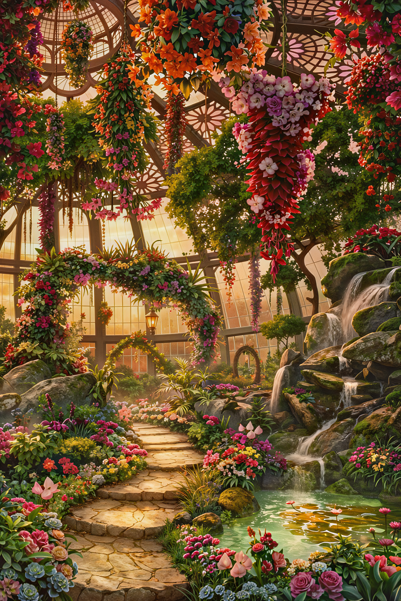

Our Vision
To become a recognized local makeup brand distinguished by its creative identity and thoughtful consideration of Filipino makeup consumers' preferences and experiences.

YLÉA FLORÉA is a locally developed makeup brand concept created with Filipino makeup consumers in mind. Recognizing how the country's hot, humid, and rainy weather can affect makeup experiences, the concept considers local conditions alongside consumers' beauty preferences. It brings together a locally relevant approach to makeup and a distinctive creative direction, forming the foundation of the brand.
WHERE THE IMPOSSIBLE BLOOMS ✿Inspired by an enchanted garden, YLÉA FLORÉA features a dreamy aesthetic shaped by floral details, elegant elements, and imaginative designs. These visual elements establish the brand's distinctive character and guide the presentation of its proposed makeup collection. The website extends this identity through a cohesive design that balances decorative details with an organized, accessible browsing experience.
To become a recognized local makeup brand distinguished by its creative identity and thoughtful consideration of Filipino makeup consumers' preferences and experiences.
YLÉA FLORÉA aims to present a distinctive makeup concept that considers the preferences and experiences of Filipino makeup consumers, including the challenges associated with the country's climate. Through its proposed collection, the brand seeks to offer opportunities for creative self-expression while helping consumers explore their options through clear, accessible product information. The website will present relevant product details, including descriptions, shades, ingredients, prices, and intended suitability for weather conditions in the Philippines.
Five little promises at the heart of YLÉA FLORÉA.
We value originality and encourage makeup lovers to explore different looks, experiment with their styles, and express themselves through makeup.
We recognize the experiences of Filipino makeup consumers and aim to consider local climate conditions when shaping our proposed product concept and communicating its intended uses.
We respect diverse preferences and personal styles, recognizing that each individual should be free to choose looks that reflect their own tastes and personality.
We value accurate, understandable product information that enables visitors to compare details and make informed decisions when exploring the proposed collection.
We believe that effective design balances visual appeal with usability. We aim to create a cohesive website experience in which the fantasy-garden aesthetic complements clear organization and straightforward navigation.
“Where dreams take root, magic unfolds,
and the impossible blooms.”